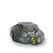
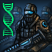
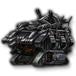
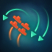

Land warfare
Wars are not decided in space alone. To secure ultimate victory, one must seize control of enemy planets, and to capture enemy worlds, entire armies are needed, along with the preparation and stratagems to properly use them. Worlds may only be invaded if the system's starbase has been occupied.
Orbital bombardment
Orbital bombardment occurs when a fleet is in orbit around a hostile world, and causes damage to any armies but also kills pops, causes  Devastation and has a chance to ruin districts or buildings. Effectiveness is based on the fleet size of the fleet in orbit, although it suffers diminishing returns after 100 and every 10 planet size halves damage from orbital bombardment and the maximum number of pops it can kill simultaneously is 200 regardless of fleet size. The more pops and buildings a world has relative to its size, the more damage it receives from orbital bombardment. Enemy assault armies on the planet take double damage from orbital bombardment.
Devastation and has a chance to ruin districts or buildings. Effectiveness is based on the fleet size of the fleet in orbit, although it suffers diminishing returns after 100 and every 10 planet size halves damage from orbital bombardment and the maximum number of pops it can kill simultaneously is 200 regardless of fleet size. The more pops and buildings a world has relative to its size, the more damage it receives from orbital bombardment. Enemy assault armies on the planet take double damage from orbital bombardment.
If orbital bombardment destroys the last army, the world has a chance to surrender if the attacking empire has the Allowed Orbital Surrender Acceptance policy. Worlds from  Gestalt Consciousness empires will never surrender.
Gestalt Consciousness empires will never surrender.
While a hostile fleet is orbiting a world, defense armies cannot respawn and  Devastation does not decrease.
Devastation does not decrease.
| Stance | Planet damage | Army damage | Pop kill chance | Other effects | Requirements |
|---|---|---|---|---|---|
| 50% | 100% | 25% |
|
| |
| 100% | 150% | 50% |
|
| |
 Armageddon Armageddon Bombardment blankets the planet in heavy ordnance with the explicit aim of maximizing civilian casualties. |
150% | 200% | 100% |
|
|
 Firestorm Firestorm Bombardment sets parts of the planet on fire, serving as a glorious bonfire that strengthens our resolve and unifies our society. |
125% | 125% | 100% |
|
|
Seismic Carpet Bombing Seismic Carpet Bombing targets the planet's geology, destroying infrastructure and splitting the crust to bring forth massive volcanoes. |
150% | 200% | 125% |
|
|
 Javorian Pox Javorian Pox Bombardment showers the planet with a deadly pathogen. |
20% | 150% | 150% |
|
|
 Raiding Raiding Bombardment targets enemy population centers with specialized raiding craft that scoop up their people and bring them back to our worlds to put them to work. |
50% | 50% | 15% |
|
|
 Seed Bombing Seed Bombing carpets the planet with hyper-fertilized seed balls, causing an exploding growth. |
100% | 50% | 0% |
| |
Voidworm Spores Voidworm Spores destroy population and create new Voidworm Nymphs. |
100% | 100% | 50% | ||
| 200% | 100% | 50% |
|
||
| 100% | 0% | 0% |
|
| |
| 300% | 100% | 200% |
| ||
| 100% | 25% | 10% |
|
|
Combat

{kind=link}
{kind=link}
{kind=link}
{kind=link}
{kind=link}
{kind=link}
{kind=link}
{kind=link}
{kind=link}
Ground combat takes place between the world owner's armies and the invader's armies. It takes 10 days for armies in orbit to land on a world. The number of armies that can be engaged in combat on either side is five plus one-fifth (20%) of the  planet size. Excess armies are initially placed in a reserve area behind the frontline and replace any disengaged or destroyed armies as combat progresses.
planet size. Excess armies are initially placed in a reserve area behind the frontline and replace any disengaged or destroyed armies as combat progresses.
Each day, each army engaged in combat deals its  health and
health and  morale damage to a randomly selected enemy army; armies with less than 50% health are twice as likely to be selected. Armies below 50% health may also disengage from battle; this moves them from the frontline area to the reserve area. Disengaged armies cannot return to the frontline but can still be attacked by enemy armies and destroyed, although they are half as likely to be selected as the target of an enemy army.
morale damage to a randomly selected enemy army; armies with less than 50% health are twice as likely to be selected. Armies below 50% health may also disengage from battle; this moves them from the frontline area to the reserve area. Disengaged armies cannot return to the frontline but can still be attacked by enemy armies and destroyed, although they are half as likely to be selected as the target of an enemy army.
Unless an army is immune to morale damage, when its morale drops below certain thresholds, the army is negatively affected by the following modifiers:
| Morale perc. | Penalty |
|---|---|
| < 50% | |
| 0% |
After 30 days, the attacker can choose to retreat at any time. However, there is a chance that each retreating army is destroyed while attempting to return to space, with the chance increasing as the army is more damaged. This makes retreating a risky endeavor and something to do only in particularly serious emergencies. A small amount of  war exhaustion is gained for each assault army that is destroyed. Some types of assault armies cause more or less war exhaustion upon their demise.
war exhaustion is gained for each assault army that is destroyed. Some types of assault armies cause more or less war exhaustion upon their demise.
As long as the ground combat is ongoing, it is possible for either side to land reinforcements, though typically this is only feasible for the attacker. The ground combat ends when the attacker retreats or all armies of either side are destroyed. If assault armies land on an enemy planet with no opposing armies present, then the planet is captured instantly and occupied with no combat taking place.
Army rank
| Rank | XP | Effects |
|---|---|---|
| Regular | 0 – 100 | None |
| Experienced | 100 – 1000 |
|
| Veteran | 1000 – 10000 |
|
| Elite | ≥ 10 000 |
|
As armies fight battles, they will increase in rank, improving their stats based on their experience points. Armies get +2 experience points each time they deal damage and +1 when they take damage. Army starting experience can be increased by +100 by each of the following:
 Strength of Legions civic
Strength of Legions civic Private Military Companies civic
Private Military Companies civic Dread Encampment building
Dread Encampment building
Mercenary Liaison Office Corporate holding- Pirate Free Haven corporate holding
Army stat modifiers
In addition to army rank, several technologies, civics, species and leader traits, and other sources affect army damage, health, and other stats. Additionally,  Commanders provide
Commanders provide  +5% army damage per level and plus other bonuses from traits. Modifiers from species traits affect armies recruited from that species, while
+5% army damage per level and plus other bonuses from traits. Modifiers from species traits affect armies recruited from that species, while  Commander and
Commander and  Official traits affect armies led by that general or on world's in that governor's sector.
Official traits affect armies led by that general or on world's in that governor's sector.
| Army damage (empire) | |
|---|---|
| Source | Effect |
| +50% | |
| +50% | |
| +50% | |
| +40% | |
| +33% | |
| +25% | |
| +20% | |
| +20% | |
| +20% | |
| +20% | |
| +20% | |
| +15% | |
| +10% | |
| +5% | |
| +5% | |
{kind=link}
{kind=link}
{kind=link}
{kind=link}
{kind=link}
{kind=link}
{kind=link}
Defense armies
Defense armies are automatically recruited by certain jobs that spawn them, based on the species working that job. Defense armies cannot be moved from the world they are recruited on and are used only to defend against enemy armies. While they are stronger one-for-one than assault armies, do not cause  War Exhaustion when destroyed and they do not cause
War Exhaustion when destroyed and they do not cause  Collateral Damage when fighting, their limited recruitment means that significant investment is necessary to fend off a concentrated attack.
Collateral Damage when fighting, their limited recruitment means that significant investment is necessary to fend off a concentrated attack.
The type of army recruited depends on the pop working the building that spawns them. Defense armies do not incur any upkeep beyond that of the building and pop which creates the army. The most powerful army available will always be the one recruited.
| Type | Requirements | ||||
|---|---|---|---|---|---|
Defense Army Defense armies are powerful, but cannot be transported from the planet. |
2.25 - 4.50 | 2.25 - 4.50 | 250 | 250 | Biological pops |
Presapient Herd Deeply territorial creatures who remain docile until provoked, at which time they are unburdened by all but the most basic instincts to defend those they recognize as kin. |
2.25 - 4.50 | 2.25 - 4.50 | 250 | 250 | |
Robotic Defense Army Cold and heartless killing-machines designed only for war. They pursue their objectives relentlessly, and are impervious to the shattering effects of poor morale that so often plague organic combat units. |
1.50 - 3.00 | 1.50 - 3.00 | 250 | Immune | |
Defense Android Army These androids are experts in defensive warfare and are adept at upholding law and order in emergencies. |
1.65 - 3.30 | 1.65 - 3.30 | 250 | Immune | |
Drone Grid These autonomous sentinel drones will incessantly patrol their assigned sectors. Though lightly armed and not very intelligent, they are legion. |
1.65 - 3.30 | 1.65 - 3.30 | 220 | Immune | |
Undead Defense Army Undead soldiers lifted from the grave by necromancers, brought back to life to protect our planets from all that might threaten them! |
2.25 - 4.50 | 3.93 - 7.87 | 350 | Immune | |
| 2.62 - 5.25 | 3.41 - 6.82 | 400 | Immune | ||
Fanatic Guardians Stoic defenders of our homeland, these unshakeable soldiers are most effective when protecting those with whom they share a close relationship. |
4.50 - 9.00 | 4.50 - 9.00 | 500 | 500 | Individualist Sovereign Guardianship |
Matrix Unit These highly lethal protective drones are most effective kept in close proximity to all other strategic nodes. |
3.30 - 6.60 | 6.60 - 13.20 | 440 | Immune | Gestalt Sovereign Guardianship |
Sentinels Living statues with a mechanical core, bodies humming and skin glowing, radiation pulsating from their cores, ready to rain destruction on their enemies! |
6.00 - 12.00 | 30.00 - 60.00 | 1400 | Immune | |
| 3.00 - 6.00 | 6.00 - 12.00 | 1000 | 600 | Titanic Lifeforms event chain |
{kind=link}
Pre-FTL armies
Pre-FTL armies are only used by primitive civilizations. They are weaker than any army and even the strongest Pre-FTL army can easily be defeated by an equal number of any regular army.
| Type | Ages | ||||
|---|---|---|---|---|---|
| Primitive Army | 0.15 - 0.30 | 0.15 - 0.30 | 100 | 160 | Bronze Age - Steam Age |
| Industrial Army | 0.60 - 1.20 | 0.60 - 1.20 | 100 | 160 | Industrial Age - Machine Age |
| Post-Atomic Army | 0.90 - 1.80 | 0.90 - 1.80 | 200 | 200 | Atomic Age - Early Space Age |
| Ketling Army | 0.90 - 1.80 | 0.90 - 1.80 | 200 | 200 | Pre-FTL Ketlings |
Assault armies
An empire can recruit assault armies from a world based on the species living there. The species must not have the Exempt Military Service species rights or the Tankbound trait to recruit an army from it. The number of assault armies that can be recruited by an empire from a species is equal to 1% of the total number of pops of that species living in the empire (which equates to 1 army for every 100 pops), with the exception of  Clone Armies and
Clone Armies and  Undead Armies. Armies not tied to a species, such as the Xenomorph Army, are unlimited unless otherwise specified.
Undead Armies. Armies not tied to a species, such as the Xenomorph Army, are unlimited unless otherwise specified.
{kind=link}
Unlike defense armies, assault armies are based mostly in space; each assault army comes with its own transport ship, which is used to carry them to their destination. Each assault army will board its transport ship when recruited and will be based aboard that transport ship when not stationed on a planet. Transport ships are unarmed but automatically upgraded with the latest defense and utility components, including cloaking devices. Assault armies can be ordered to land on an enemy planet to initiate an invasion and planetary battle to gain control of it, and they can also be ordered to land on any owned or allied world to provide additional defense.
Assault armies have a chance to cause  Collateral Damage when fighting, which will increase planet
Collateral Damage when fighting, which will increase planet  Devastation and have a chance to kill pops, ruin buildings or destroy districts. The chance to kill pops scales with the number of pops on the planet, however the last 300 pops cannot be killed by
Devastation and have a chance to kill pops, ruin buildings or destroy districts. The chance to kill pops scales with the number of pops on the planet, however the last 300 pops cannot be killed by  Collateral Damage. Assault armies that are defending a planet cause 75% less
Collateral Damage. Assault armies that are defending a planet cause 75% less  Collateral Damage.
Collateral Damage.
| Type | Mec. Cost | Bio. Cost | Time | Upkeep | Requirements | Species | DLC | |||||||
|---|---|---|---|---|---|---|---|---|---|---|---|---|---|---|
Assault Army Assault armies come with their own transports and can invade other planets. |
100% | 200 | 200 | 100% | Biological | |||||||||
Slave Army Slave soldiers who serve their masters on the battlefield. Most are conscripted by force, but many slaves volunteer in a desperate attempt to increase their food rations or escape from grueling labor. |
150% | 200 | 150 | 50% | Biological (enslaved) |
|||||||||
Clone Army Specialized clones that reach adulthood in a matter of months. With a natural lifespan of less than a decade, their lack of personal initiative is deemed an acceptable trade-off for their total obedience to officers. |
125% | 200 | 200 | 50% | Biological | |||||||||
| 150% | 400 | Immune | 50% | Artificial Specialists |
Mechanical | |||||||||
| 50% | 350 | 500 | 300% | Biological (Psionic) |
||||||||||
| 500% | 400 | Immune | 25% | Morphogenetic Field Mastery |
None | |||||||||
| 75% | 500 | 500 | 300% |  Gene Seed Purification |
Biological | |||||||||
| 300% | 1000 | 600 | 200% | Titanic Lifeforms event chain Only 3 can be recruited |
None | |||||||||
| 100% | 1000 | 400 | 100% | Ice Alien event chain Only 3 can be recruited |
None | |||||||||
| 500% | 1400 | Immune | 400% |  Cybrex War Forge relic |
None | |||||||||
Undead Army Undead soldiers lifted from the grave by necromancers. Freed from the fear of death, they strike terror into the hearts of their enemies with their foul bearing and ferocity in battle! |
125% | 200 | Immune | 50% | Biological | |||||||||
Imperial Legion The elite soldiers of the Galactic Imperium, recruited from all member nations. Drilled and conditioned into ruthless killing machines, they are fanatically loyal to the Imperium. |
75% | 600 | 600 | 300% | None | |||||||||
| 500% | 600 | 600 | 50% | Any | ||||||||||
| 50% | 500 | Immune | 50% | None | ||||||||||
Perfected Clone Army Specialized units optimized for planetary assault. Reward pathways and custom, epigenetic training give these clones combat instincts that rival those of soldiers with decades of experience. |
50% | 300 | 300 | 25% | Biological | |||||||||
Presapient Horde Fierce creatures possessed of just enough cunning and raw stamina to ensure the savage destruction of any they regard as foes. |
500% | 650 | 100 | 0% | None |
{kind=link}
{kind=link}
{kind=link}
{kind=link}
{kind=link}
Machine armies
The following armies can only be recruited by empires with a  Machine founder species and only from robot species. If the empire has
Machine founder species and only from robot species. If the empire has  Machine Intelligence authority the armies will also be immune to Morale damage.
Machine Intelligence authority the armies will also be immune to Morale damage.
| Mec. Cost cost | Bio. Cost | Time | Upkeep | Required technology | Uses species | |||||||||
|---|---|---|---|---|---|---|---|---|---|---|---|---|---|---|
| 200% | 200 | 200 | 50% | |||||||||||
| 200% | 500 | 300 | 100% |  Adaptive Combat Algorithms |
||||||||||
| 400% | 1200 | 400 | 400% | Biomechanics |
Civic armies
The following assault armies can only be recruited by empires with certain civics.
| Type | Mec. Cost | Bio. Cost | Time | Upkeep | Requirements | Species | DLC | |||||||
|---|---|---|---|---|---|---|---|---|---|---|---|---|---|---|
Abominations Enslaved soldiers who have undergone drastic experimental treatments to increase their aggression and martial capabilities, transforming them into living weapons. They are as subservient to their masters as they are fierce in battle. |
250% | 300 | 300 | 50% | Experimental Sentencing |
Biological (enslaved) |
||||||||
| 125% | 500 | Immune | 25% | Galvanic Synthesis |
Any | |||||||||
| 125% | 500 | 200 | 25% | Any |
{kind=link}
Enclave armies
The following assault armies cannot be recruited and can only be obtained by purchasing them from an enclave.
| Type | Upkeep | Enclave | ||||||
|---|---|---|---|---|---|---|---|---|
Mercenary Army These troops are in it for the money. They are ruthless and efficient, but while risk is part of the job, they are unwilling to sacrifice themselves for a cause. And will never pass on a chance to pillage. |
250% | 200 | 100 | 50% | ||||
Mechanized Mercenary Army The best mercenaries on the market. These troops make up for their low numbers by piloting huge walking machines. Although they are not the bravest soldiers, they are merciless, and leave only smoldering ruins in their wake. |
300% | 360 | 200 | 50% | ||||
Assault Wardens These specialized units have received extensive training in anti-psionic techniques and technologies, making them powerful opponents against mind-invading targets. |
250% | 200 | 100 | 50% |
Other armies
The following assault armies cannot be recruited and can only be obtained from events. They do not have  Morale.
Morale.
Unobtainable armies
Some hostile armies are produced by events or a crisis.
| Type | Morale Damage | Source | ||||
|---|---|---|---|---|---|---|
| Mutant Horde | 2.25 - 4.50 | 3.00 - 6.00 | 100% | 400 | Immune | Abandoned Terraforming Equipment Underground Vault The Doorway |
| Rampaging Forest | 1.50 - 3.00 | 1.50 - 3.00 | 100% | 200 | Immune | Migrating Forests |
| Enraged Colonists | 0.75 - 1.50 | 0.75 - 1.50 | 100% | 100 | 200 | Rudimentary Robots planet event |
| Living Snow Warrior | 2.25 - 4.50 | 3.00 - 6.00 | 100% | 400 | Immune | Unusual Snow |
| Prethoryn Army | 3.00 - 6.00 | 6.00 - 12.00 | 100% | 400 | Immune | Prethoryn Swarm |
| C.A.R.E Mega-Warform | 6.00 - 12.00 | 9.00 - 18.00 | 400% | 1200 | Immune | |
| 52.50 - 105.00 | 2625.00 - 5250.00 | 100% | 11000 | Immune | Unexpected Mineral Seams | |
| 4.50 - 9.00 | 4.50 - 9.00 | 350% | 1400 | Immune | Gigantic Skeleton event |
Devastation
Devastation is a measure of damage inflicted on a world's infrastructure from war. Values range from 0 to 100%. Every 1% Devastation causes a 1% decrease in  housing,
housing,  amenities,
amenities,  trade,
trade,  resources from jobs,
resources from jobs,  upkeep from jobs and
upkeep from jobs and  pop growth speed. Pops will not automatically resettle to a world that has at least 10% Devastation or more.
pop growth speed. Pops will not automatically resettle to a world that has at least 10% Devastation or more.
Devastation is primarily caused by orbital bombardment and, to a lesser degree, by  Collateral Damage from armies. Assault armies have a
Collateral Damage from armies. Assault armies have a  Collateral Damage modifier that quantifies how quickly they cause devastation.
Collateral Damage modifier that quantifies how quickly they cause devastation.
Devastation decreases by 0.05% daily if the world is not being invaded or orbited by a hostile fleet.
| Orbital Bombardment | |||||
|---|---|---|---|---|---|
| 0%-9.9% | 50% | Functional | Alive | Yes | |
| 10%-24.9% | 50% | Functional | Alive | No | |
| 25%-49.9% | 100% | Functional | Alive | No | |
| 50%-74.9% | 100% | Disabled | Destroyed | No | |
| 75%-100% | 200% | Disabled | Destroyed | No | |
References
| Exploration | Exploration • FTL • Unique systems • L-Cluster • Pre-FTL species • Fallen empire • Spaceborne aliens • Enclaves • Guardians • Marauders • Caravaneers |
| Celestial bodies | Celestial body • Colonization • Planetary features • Planet modifiers |
| Discovery | Discovery • Anomaly • Archaeological site • Astral rift • Relics • Collection |
| Species | Species • Pop modification • Biological traits • Machine traits • Population • Species rights • Ethics |
| Leaders | Leader • Common leader traits • Commander traits • Official traits • Scientist traits • Paragons |
| Governance | Empire • Origin • Government • Civics • Council • Policies • Edicts • Factions • Traditions • Ascension perks • Ambition • Situations |
| Economy | Resources • Planetary management • Districts • Jobs • Designation • Trade • Megastructures • Waystation |
| Buildings | Planet capital • Common buildings • Planet unique • Empire unique • Holdings |
| Ships | Ship • Arkship • Ship designer • Core components • Weapon components • Utility components • Mutations • Offensive mutations |
| Technology | Technology • Physics research • Society research • Engineering research |
| Diplomacy | Diplomacy • Relations • Galactic community • Federations • Subject empires • Intelligence • Contracts • AI personalities |
| Warfare | Warfare • Space warfare • Land warfare • Starbase • Crisis |
| Others | Events • The Shroud • Preset empires • AI players • Stat modifiers • Console commands • Easter eggs |